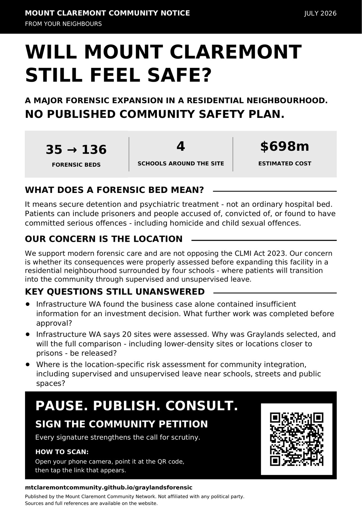

Two things. Together, they carry real weight.
The petition shows scale — a public number anyone can point to, including sceptics who'll ask how many are bots or non-residents. Registering support does what a petition count can't: it puts your name and suburb on record as an actual Mount Claremont resident who took this seriously — the kind of evidence a government finds much harder to wave away. Do one, or both — either way, do it here, not scrolled past.
Sign the petition
Hosted on Change.org. Sets out the same asks as the Research Paper: pause the works, release the evidence, consult the community properly before Stage 2 proceeds.
Sign the petition ↗Register your support
Puts your name and suburb on record. This is what we can actually cite to a Minister or MP — a signature count alone can't do this.
Register your support ↓One form, two things it can do
If you're registering support: your name and suburb go on record as an actual Mount Claremont resident who took this seriously. When we write to Ministers, MPs, or media, "a petition with X thousand signatures" is easy to dismiss — "residents across Mount Claremont, Karrakatta and Swanbourne have formally registered their concern, by name" is not. You'll also get factual updates as the formal processes play out.
If you're a resident or parent with a direct experience of Graylands — a security concern, an incident, contact from the hospital, something you witnessed — the same form has a field for that: "why this matters to you." Tell us there. If it checks out, it may be added to the Safety risks log; either way, only ever anonymously, and only with your OK.
You don't need to do both. Fill in whichever part applies to you.
Form not loading? Open it in a new tab, or email mtclaremontcommunity@gmail.com and we'll add you directly.
What this information is used for, and what it isn't.
- Your name and suburb may be cited — individually or grouped by area ("residents of X and Y streets") — in our correspondence with Ministers, MPs, and media. Real, identifiable local support is what a signature count alone can't demonstrate.
- If you've told us about an experience with Graylands, we'll only ever quote it anonymously, and only after checking back with you first.
- We will not publish your name publicly, or hand your individual details to anyone outside the small group of volunteers running this campaign, without asking you first.
- Your details are never sold and never used for anything beyond this campaign.
- Remove yourself at any time — email mtclaremontcommunity@gmail.com and you'll be taken off the list and out of anything we're preparing.
- This is run by a volunteer resident group, not a registered organisation — we're handling your information with the same care a formal one would, and wanted you to know exactly who's holding it.
Share the flyer
This is the flyer going through letterboxes around Mount Claremont from 1 August 2026. If you've had one, you can forward the image directly — it's built to be screenshotted and shared on WhatsApp, Facebook groups, and Nextdoor, not just read on paper. If you haven't, download it below.

Printing and distributing more of these costs real money — paper, ink and copies add up over hundreds of households. If you'd like to help cover the next print run, email us and we'll let you know what's needed. Same as the FOI programme — we'll always account for what's spent.
Other ways to help
- Write to Sandra Brewer MLA (Member for Cottesloe) and your federal Member for Curtin
- Ask your school's P&C or Board to write formally to the responsible Ministers
- Write to the Heritage Council of Western Australia — this process is still open, unlike the closed EPBC referral
- Share this website with neighbours and other school communities — the research paper and evidence pack are both downloadable from here
- Check the latest updates to see what's already been sent and what replies have come back, before you write in yourself